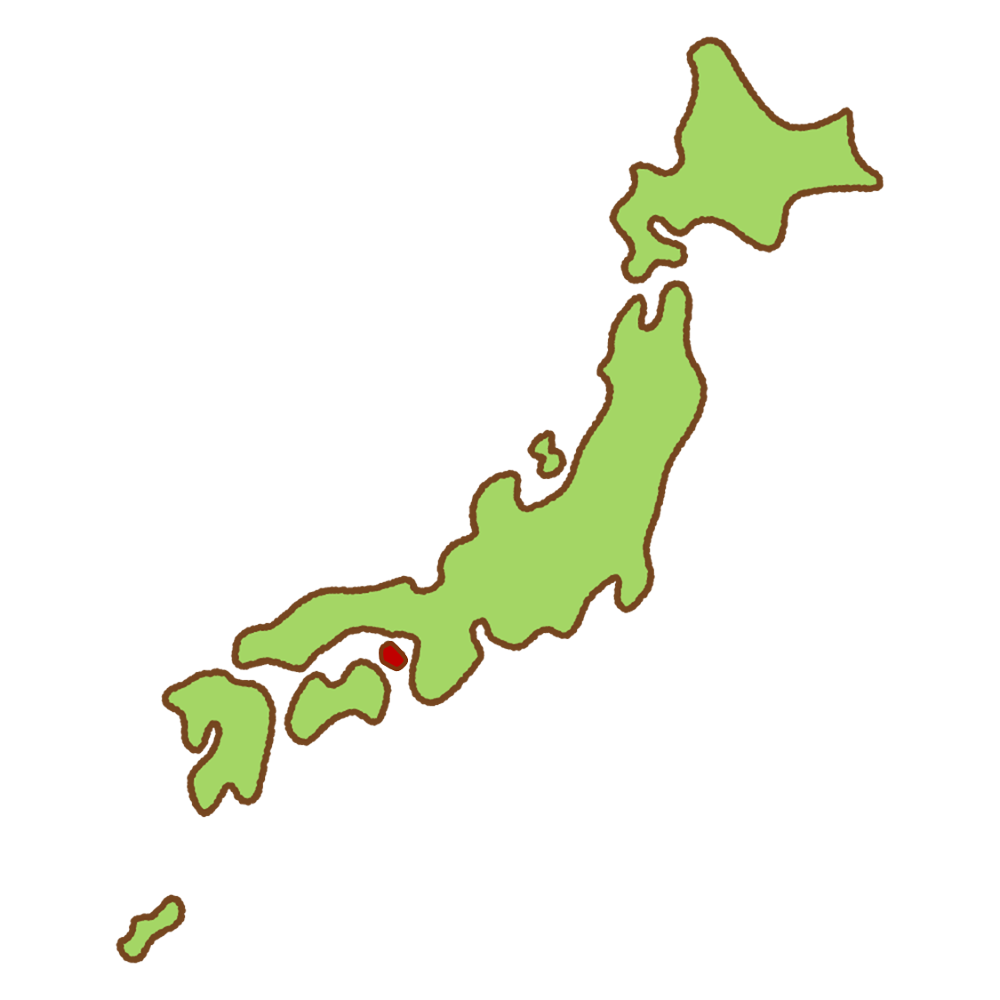
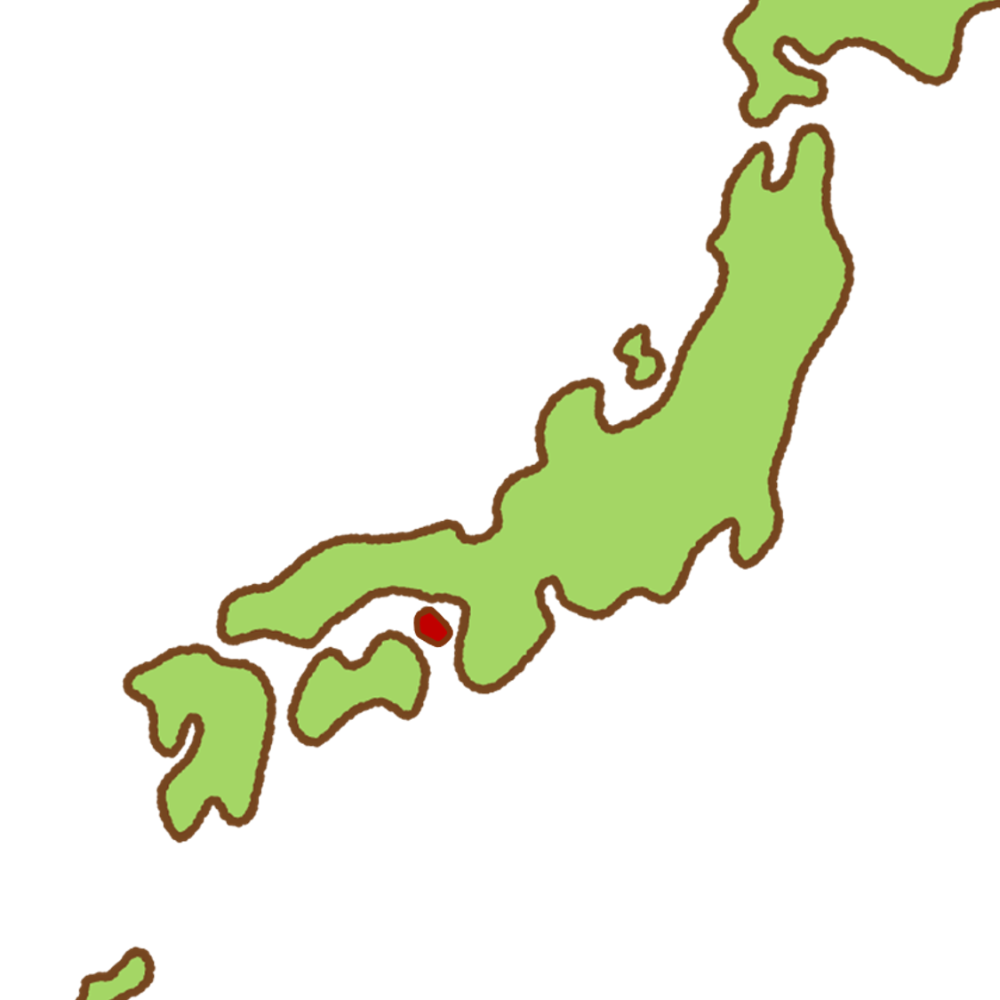
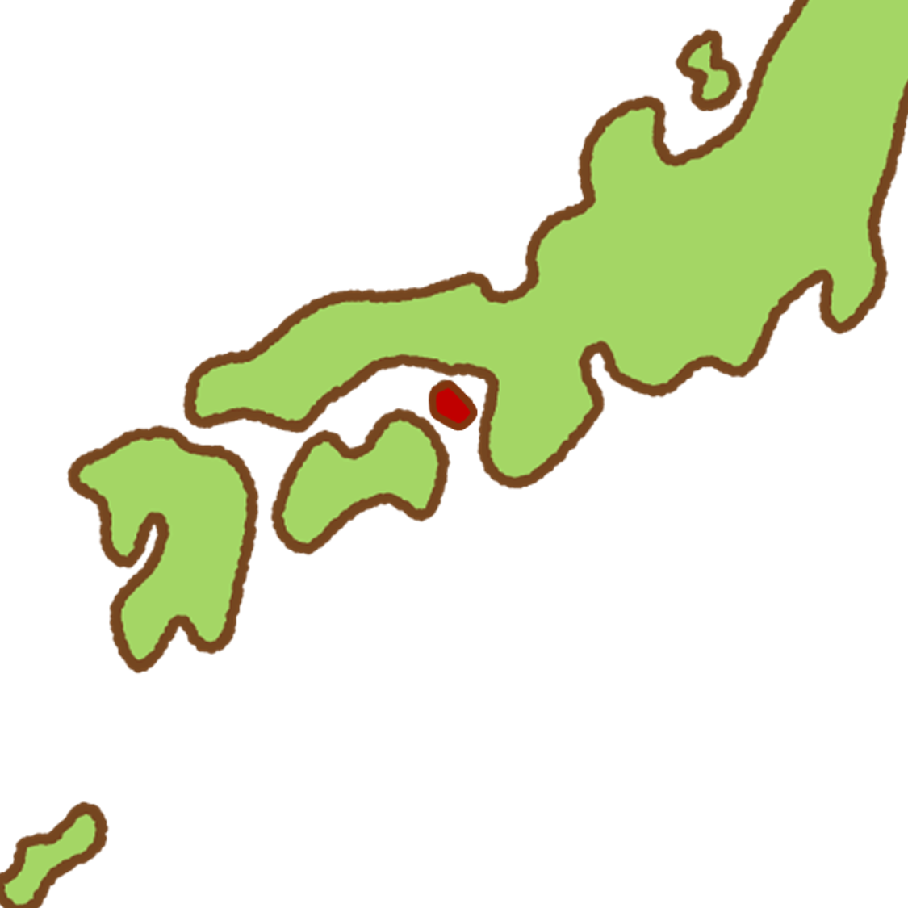
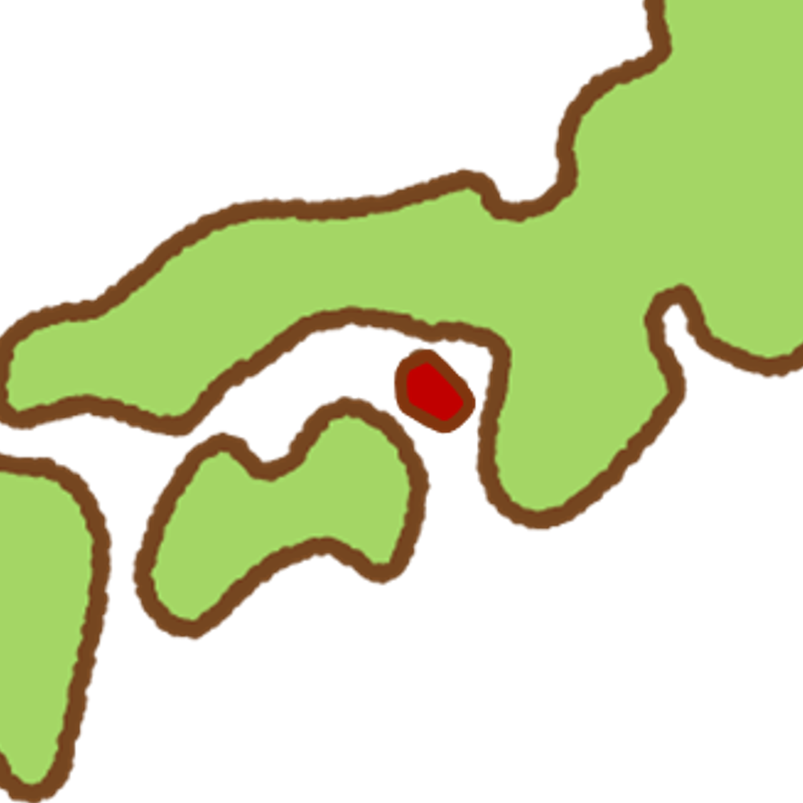
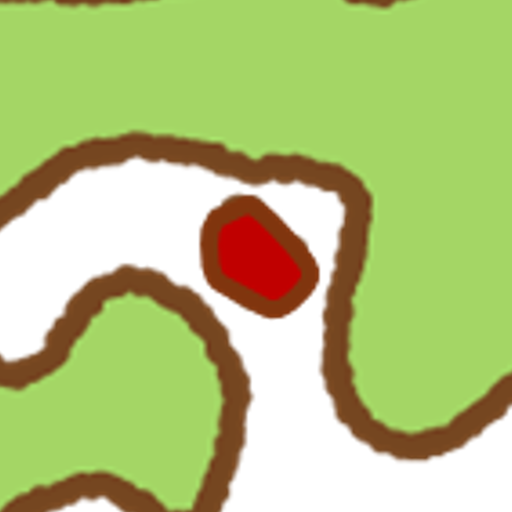
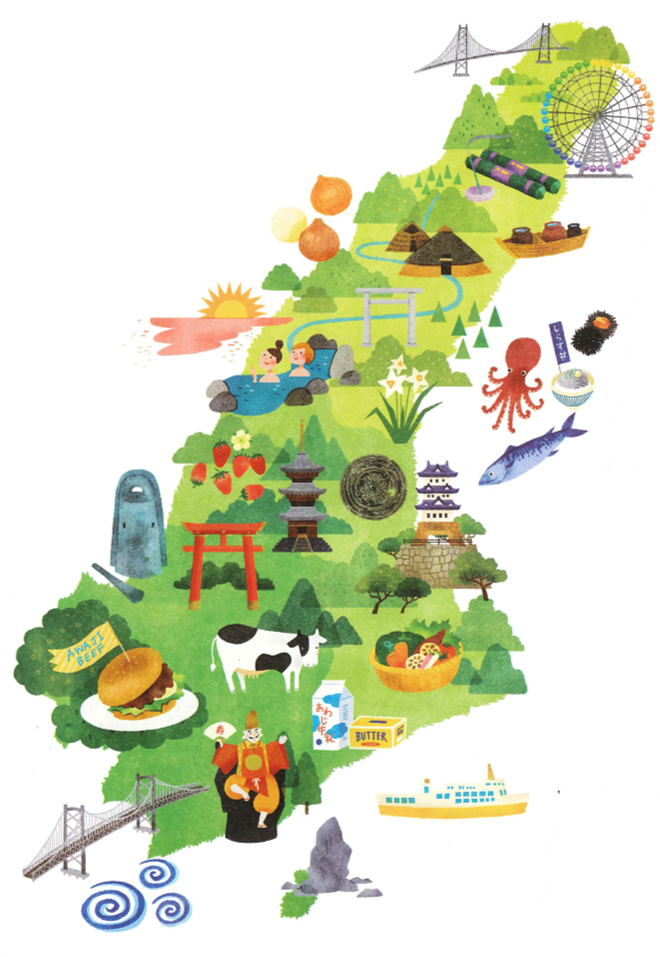

地理と基本情報
- 兵庫県南部/瀬戸内海東部に位置
- 南北53km、東西22km、外周203kmのひょうたん型
- 面積592km²（東京23区と同じ広さ！！）
- 人口12～13万人
- 淡路市/洲本市/南あわじ市の3つのエリアで構成
- 本州→明石海峡大橋/四国→大鳴門橋でアクセス
歴史と文化
くにうみ神話 ～日本発祥の地 淡路島～
淡路島は日本神話において、最初に生まれた島とされています。くにうみ神話における重要な舞台です。
淡路人形浄瑠璃 ～神事から芸能文化へと～
淡路島は人形浄瑠璃の発祥地として知られ、神事から発展した伝統芸能が今も受け継がれています。
祭り ～まつりに刻まれた島人達の精神性～
淡路島では多くの祭りが行われており、島民の精神性や文化が色濃く反映されています。